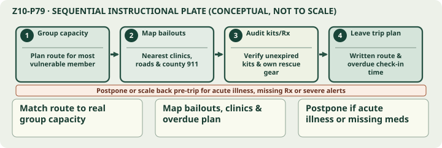

Z10-P79 · Wilderness medicine · New manuscript
Conduct pre-trip medical screening, group disclosures, and evacuation planning
Prevent avoidable medical emergencies by aligning route demands with real group health capacity and confirmed rescue plans before departure.
When it applies · Trip planning for families, youth/club outings, and multi-day remote expeditions.
Equipment · Written trip plan left with emergency contact, nearest hospital/clinic list, local SAR/EMS phone numbers, and group medical readiness review.

Actions
- Match trip distance, elevation, weather exposure, and bailout frequency honestly to the least experienced or most medically vulnerable party member—not the strongest athlete.[E11, T10]
- Map the nearest emergency departments, urgent-care clinics, trailhead bailouts, and local county 911/sheriff dispatch numbers along the route before losing signal, and leave a complete written trip plan with an overdue check-in deadline.[E01, T06, T11]
- Verify current hands-on first-aid/CPR certifications within the group and review who carries emergency comms, the group kit, and any voluntarily shared personal emergency action plans.[M20, T10, E11]
Failure recognition · Taking an unacclimatized group with undisclosed asthma and heart history onto a steep remote loop without knowing the nearest bailout road or hospital.[E11, T10]
Verify · Confirm written trip plan is lodged with a reliable contact, bailout routes are mapped, and group kits/medications are checked before leaving trailhead.[E01, T11, M20]
Stop or change course · Acute pre-trip illness (fever, chest pain, severe injury), missing critical personal medications, or severe weather warnings require postponing or scaling back before launch.[E01, T10]
Evidence and editorial notes
- E01 · Minnesota DNR · Safety in State Forests (current web edition)
- Section: Before your trip and while visiting · Conditions: State-forest travel and backcountry planning
Support: Know the route, check conditions, carry navigation and safety equipment and share trip details.
Limitations: Conditions and trail maintenance vary seasonally across forest units. · Conflicting evidence: None; aligns with NPS-H.
Editorial note: Foundation for trip planning and pre-departure risk checks. · Specialist reviewer: Land management and search and rescue
Primary source · checked 2026-11-24 - E11 · NPS · Hike Smart (current web edition)
- Section: Plan your hike; Stay together · Conditions: Groups on hiking routes
Support: Choose a route suited to the group's abilities and hike at a pace that keeps the group together.
Limitations: Fast hikers moving ahead at junctions is a leading driver of preventable separation. · Conflicting evidence: None; aligns with SAR prevention principles.
Editorial note: Core reference for group accountability and pacing cards. · Specialist reviewer: Group leaders and search and rescue
Primary source · checked 2026-11-24 - M20 · NIH / MedlinePlus · First Aid Overview (current web edition)
- Section: Lay First-Aid Scope, Kit Readiness, and Documentation · Conditions: Pre-trip kit preparation and remote patient monitoring
Support: Maintain an inspected, unexpired first-aid kit matched to your actual training, keep written patient observations (time, responsiveness, breathing, symptoms, interventions) for EMS handoff, and practice skills in certified courses.
Limitations: Carrying advanced medical instruments without clinical training adds risk rather than capability. · Conflicting evidence: None; aligns with ARC and NPS-K.
Editorial note: Anchors kit sizing, SOAP-style lay observation logs, and scope-of-practice cards. · Specialist reviewer: Wilderness EMS and clinical education
Primary source · checked 2026-11-24 - T06 · NPS · Outdoor Emergency Plan (current web edition)
- Section: If you get lost or hurt; call for help · Conditions: Outdoor US emergency
Support: Communicate location, last known point, situation and needs. Stay put when unable to establish a safe route unless immediate danger requires movement.
Limitations: Cell signal is unreliable in backcountry terrain; pre-trip plans bridge communication gaps. · Conflicting evidence: None; core lost-person decision rule.
Editorial note: Foundation for stay/signal/move and dispatch handoff cards. · Specialist reviewer: Search and rescue
Primary source · checked 2026-11-24 - T10 · FEMA / Ready.gov · People with Disabilities (current web edition)
- Section: People with Disabilities > Make a Plan and Build a Kit · Conditions: Individuals with mobility, sensory, medical, or power-dependent access and functional needs
Support: Build a personal support network, plan accessible evacuation transport, register voluntarily with local emergency registries where available, and plan backup power and spare supplies for medical devices, medications, and service animals.
Limitations: Local registry availability and utility priority-restoration policies vary by jurisdiction. · Conflicting evidence: None; extends generic preparedness plans to accessible requirements.
Editorial note: Directly addresses Z01 accessible emergency planning requirement. · Specialist reviewer: Accessible emergency management and disability preparedness
Primary source · checked 2026-11-24 - T11 · FEMA / Ready.gov · Make a Plan (current web edition)
- Section: Make a Plan > Family Emergency Communication Plan · Conditions: Households and traveling groups preparing for disruptions
Support: Record out-of-area contacts, local meeting places, medical/allergy summaries, and alternate communication channels (text vs voice) in paper and offline formats; practice the plan periodically.
Limitations: Cellular networks often congest during disasters while SMS or out-of-area contacts may still connect. · Conflicting evidence: None; complements outdoor trip-plan cards.
Editorial note: Anchors emergency communication protocols and group contingency plans. · Specialist reviewer: Emergency management and communications
Primary source · checked 2026-11-24
Source lineage · NPS Hike Smart and FEMA Make a Plan; new manuscript · Classification · New manuscript.